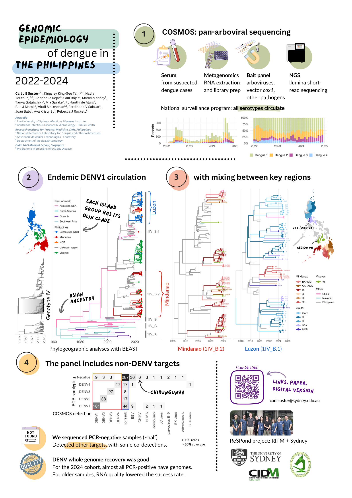

Poster

Abstract
Background: The understanding of viral population structure and dynamics is essential to inform dengue control strategies. Dengue virus surveillance at the resolution of serotypes is valuable but cannot provide additional context, particularly in hyperendemic regions where all serotypes co-circulate. Whole genome sequencing can distinguish endemic circulation from novel introductions and infer the likely age and geographical expansion of endemic strains.
Methods: In partnership with the National Reference Laboratory for Dengue and other Arboviruses and the Medical Entomology Department at the Research Institute for Tropical Medicine (RITM), Philippines, we applied the Comprehensive Sequencing of MOSquito-borne pathogens (COSMOS) bait-capture sequencing approach to 646 serum specimens collected from clinically suspected dengue cases between 2022–2024. Routine dengue RT-PCR serotyping identified 353 dengue-positive, and 293 dengue-negative specimens. Samples were selected for sequencing to represent all regions of the Philippines and dengue serotypes.
Results: COSMOS sequencing recovered complete dengue genomes from 56% (192/353) of RT-PCR positive cases with 95% concordance to serotyping. All four dengue serotypes circulated, with dengue 1 predominating (n=92, genotype 1IV_B.1; n=47, genotype 1IV_B.2). Phylogenetic analysis demonstrated clustering within lineages previously reported in the Philippines. Phylogeographic analysis showed sub-clades specific to local regions in the Philippines, with evidence of inter-region introductions. Adequate representative sampling and the availability of contextual global sequences remains a challenge.
Conclusion: COSMOS sequencing proved highly effective for arbovirus surveillance, enabling high-resolution dengue genomic recovery and accurate serotyping. Phylogenetic findings indicate sustained local dengue transmission with geographic expansion of genotypes, emphasizing the importance of continuous genomic monitoring.
About
Sydney ID brings together researchers across the University of Sydney to solve problems in infectious diseases. The institute hosts research collaborations across the Pacific and Southeast Asia.
RITM is part of the Department of Health in the Republic of the Philippines. It hosts reference laboratories—including for dengue and other arboviruses—and facilities for genomic surveillance.
CIDM-PH translates research into the NSW Health Pathology pathogen genomics service, at ICPMR Westmead. The centre has deep expertise in public health and clinical applications of microbial genomics.
Related papers
- Preprint to follow: check back here soon!
- Sy AK, et al. Genetic diversity and dispersal of dengue virus among three main island groups of the Philippines during 2015–2017. Viruses 15(5), 1079 (2023).
- Galarion MJ et al. Genotypic persistence of dengue virus in the Philippines. Infection, Genetics and Evolution 69, 134-141 (2019).
- Mayne R, …, Golubchik T. Castanet: a pipeline for rapid analysis of targeted multi-pathogen genomic data. Bioinformatics 40(10), btae591 (2024).